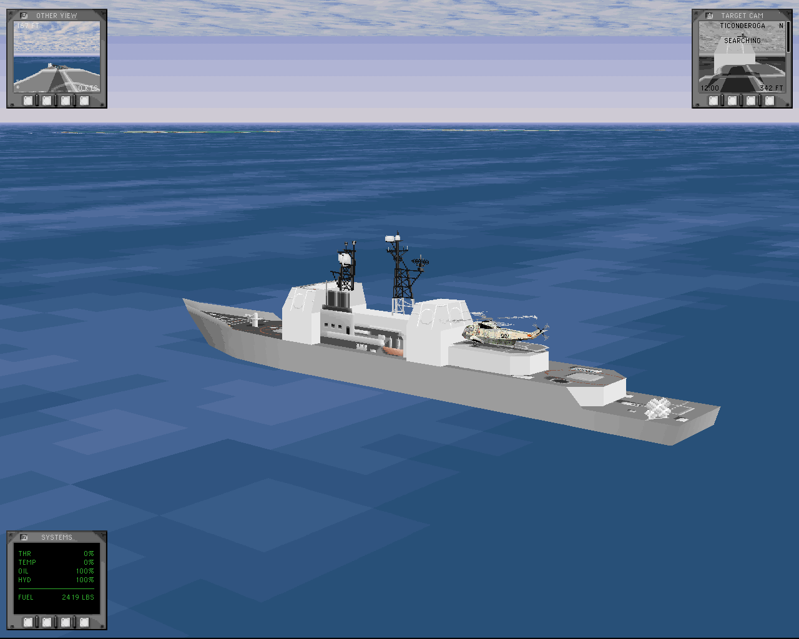
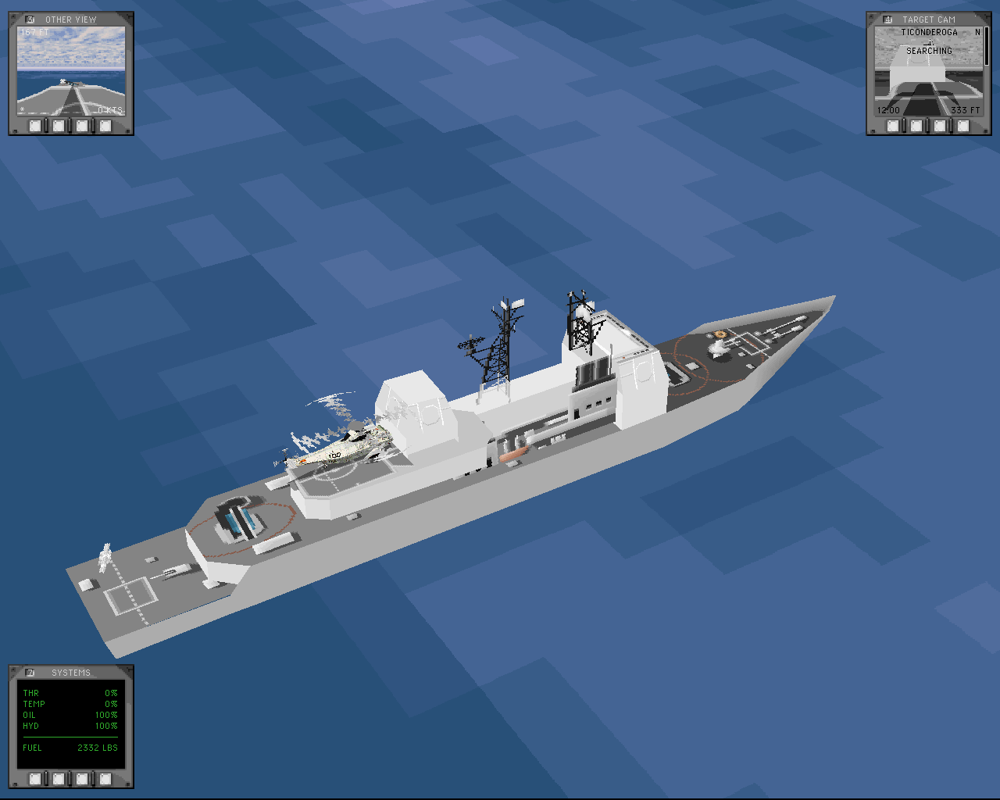

Helicopters can now land on the Ticonderoga
直昇機現在可以在提康德羅加號上起降了
In stock Fighters Anthology the Aegis cruiser has a helicopter deck painted on it, but nothing can touch down there: a helicopter just sinks through it. Now the deck is solid. Land on it, take off from it, taxi into the new hangar, and stay put while the ship sails, the same way aircraft ride on the Nimitz or the Wasp. The autopilot lands on the deck too.
原版 Fighters Anthology 的神盾巡洋艦上雖然畫了直昇機甲板，但根本降不下去，直昇機會直接穿過去。現在甲板是實心的了：可以降落、起飛、滑進新的機庫，軍艦航行時你會跟著一起移動，就像停在尼米茲號或黃蜂號上一樣。自動駕駛也會降落在甲板上。


Screenshots from FA 1.02f with the shipped files, taken by Kuoyi.
以上是 Kuoyi 用發布版檔案在 FA 1.02f 裡的實機截圖。
What you can do now
現在可以做什麼
How it works
怎麼做到的
FA decides whether something is a landing surface from two places: the collision boxes in the shape, and the object type in the NT file. Both had to change. Nothing in FA.EXE was touched.
FA 判斷一個東西能不能降落，要看兩個地方：外形檔裡的碰撞框，和 NT 檔裡的物件類型。兩邊都要改，FA.EXE 完全沒有動。
| File | 檔案 | Change | 改了什麼 | Why | 原因 |
|---|---|---|---|---|---|
| TICON.SH | A landable box (type 0x10, the kind runways and carrier decks use) over the flight deck and into the hangar. The hull box now starts in front of it. | 在飛行甲板上加一個可降落的碰撞框（類型 0x10，跑道和航艦甲板用的那種），一路延伸進機庫。船身的碰撞框改成從它前面開始。 | In the stock shape the ship is one plain solid box that sits well above the deck, so a helicopter could only hit it or pass through. | 原版外形整艘船是一個普通的實心框，高度比甲板高很多，直昇機只會撞上或穿過去。 | |
| TICON.SH | Named landing points (the same set the Wasp uses) at the centre of the flight deck. | 在飛行甲板中央加上具名降落點（和黃蜂號同一組）。 | The carrier code looks these points up for the approach and the autopilot. Without them it aims at the middle of the ship. | 航艦程式會用這些點來進場和自動駕駛，沒有的話會對準船的中間。 | |
| TICON.SH | A rebuilt detailed model: 581 vertices, one open hangar under the aft deckhouse, SPY-1 radar faces, 3D Mk 45 guns, CIWS, stacks, boats and masts. The far-away models are the factory ones. | 重做的精細模型：581 個頂點，後段艦橋下一個開放式機庫，SPY-1 雷達面，立體的 Mk 45 艦砲、方陣快砲、煙囪、小艇和桅杆。遠距離的模型保持原廠。 | The old model had no hangar to park in. | 舊模型沒有可以停進去的機庫。 | |
| TICON.NT | Type flags $131 → $408131 | 類型旗標 $131 → $408131 | Marks the object as something aircraft can stand on, like a runway or a rooftop. | 把物件標成飛機可以停在上面的東西，像跑道或屋頂。 | |
| TICON.NT | utilProc _GVProc → _CARRIERProc | utilProc _GVProc → _CARRIERProc | FA has no general "ride on a moving platform" rule. Every ship you can land on in every LIB (47 of them) runs _CARRIERProc, and that is what carries a parked aircraft along. The flags alone kept the helicopter on the deck but left it behind. | FA 沒有通用的「跟著移動平台走」規則。所有 LIB 裡能降落的 47 艘船都是用 _CARRIERProc，就是它讓停著的飛機跟著船走。只改旗標的話，直昇機停得住，但會被船留在原地。 |
Things to know
使用注意事項
aegis.SH. This TICON.NT is the FA_2.LIB one and loads ticon.SH.aegis.SH。這個 TICON.NT 是 FA_2.LIB 的版本，載入的是 ticon.SH。How to install
安裝方式
- Back up any
TICON.SHandTICON.NTyou already have as loose files. - Copy
TICON.SHto where your FA install loads add-on SH files, andTICON.NTto where it loads loose NT files (loose files override the copies inside the LIBs). - Start a mission with a Ticonderoga, fly a helicopter to it, and set down on the deck behind the superstructure.
- 先備份你原本放在外面的
TICON.SH和TICON.NT。 - 把
TICON.SH放到 FA 讀取外加 SH 檔的地方，TICON.NT放到讀取外加 NT 檔的地方（外面的檔案會蓋過 LIB 裡的版本）。 - 開一場有提康德羅加號的任務，開直昇機飛過去，降落在上層結構後方的甲板上。
The ship also shows in the SH gallery. More about landing surfaces in FA: SH edit notes on GitHub.
這艘船也可以在 SH 模型庫裡看。FA 降落面的更多說明：GitHub 上的 SH 修改筆記。